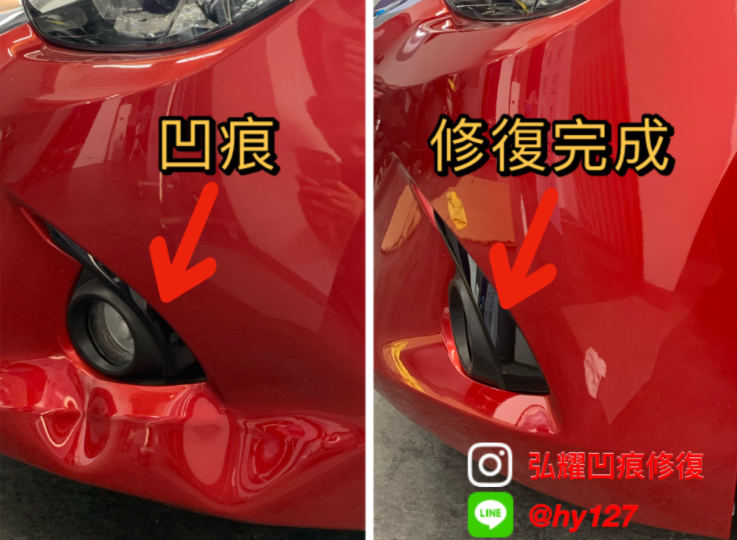

這台車前保桿撞到，凹了一條很明顯的摺線。車主回原廠問，估價要4-5千，而且還要重新烤漆，這樣原漆就沒了，很可惜。 來弘耀汽車凹痕修復工作室，我們用專業的PDR（免烤漆微鈑金）技術，在不傷原漆的情況下，把凹痕修復得跟新的一樣。 我們快速評估、精準報價，車主不只省下大筆錢和時間，還保住了愛車的原廠漆，不用擔心二次烤漆的問題。
立即預約使用專業檢修光板觀察凹痕結構，捨棄傳統舊式的鈑金烤漆，讓汽車保留原漆回復到無凹痕的狀態，比傳統烤漆節省時間及金錢。
經過多個案例及好評見證，板金修復首選弘耀板金修復工作室。
營業時間：週一 ～ 週六 AM 0900 - PM 1930。
這台車前保桿撞到，凹了一條很明顯的摺線。車主回原廠問，估價要4-5千，而且還要重新烤漆，這樣原漆就沒了，很可惜。 來弘耀汽車凹痕修復工作室，我們用專業的PDR（免烤漆微鈑金）技術，在不傷原漆的情況下，把凹痕修復得跟新的一樣。 我們快速評估、精準報價，車主不只省下大筆錢和時間，還保住了愛車的原廠漆，不用擔心二次烤漆的問題。
立即預約
這台車的B柱被樹上掉下來的果實砸到，凹了一塊。車主很愛車，不想有任何瑕疵，也不想傳統鈑金烤漆傷到原漆。 後來聽說弘耀汽車凹痕修復工作室有專業的PDR免烤漆技術，就特地來找我們。我們的師傅仔細評估後，用厲害的免烤漆微鈑金技術，把B柱的凹痕修得完美無缺。 修好後，B柱跟新的一樣，凹痕完全不見了，車主超滿意，我們也替他開心。
立即預約車主回家路上不小心撞到東西，右前葉子板凹了一個大洞。還好車子有貼膜，漆沒傷到，但凹痕很明顯，看了很不舒服。 現場評估時，車主很擔心葉子板要換掉，但弘耀的專業師傅評估後說可以修。經過幾天細心修復，車主來牽車時超滿意，不只省了換葉子板的錢，還保住了車子的原貌。
立即預約一般來說，小範圍的凹痕修復約需 30 分鐘至 2 小時。較複雜或較大的凹痕則可能需要更長的時間。建議您親自駕車至現場，由我們的專業技師為您評估，以獲得最準確的修復時間。
費用主要取決於凹痕的大小、深度、位置以及車身材質（如鋁合金）。我們提供免費的現場估價服務，技師會根據實際車況向您報價，並解釋修復方式，在您同意後才會開始施工。
完全不會。PDR 技術是在不傷害原車漆的前提下，利用專業工具將凹陷的鈑金從內部慢慢推出，回復到原本的狀態。這是 PDR 技術最大的優點之一，能完整保留您愛車的原漆價值。
我們很樂意為您解答任何關於汽車凹痕修復的問題，歡迎透過以下方式聯繫我們，或直接填寫右方的預約表單，我們將盡快與您聯繫。